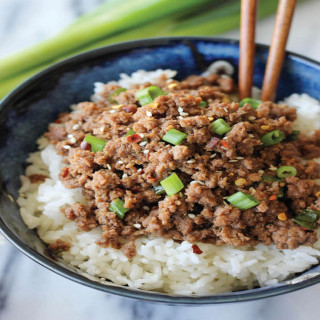

Korean Style Minced Meat

Spicy and sweet, easy and fast to make!
Ingredients
- 400g Minced meat
- 150g Rice
- 2-3 Spring Onions
- 60ml Soy Sauce
- 50g Dark Soft Brown Sugar
- 1 Tbsp. Sesame Oil
- 1 Tbsp. Garlic Powder
- 1/2 Tsp. Ginger Powder
- 1 Tsp. Chili Powder
- Black pepper
- 2 Tbsp. Black Sesame Seeds
- Sriracha Sauce
Steps
- Wash and cook rice.
- In a bowl mix together, soy sauce, brown sugar, sesame oil, garlic, ginger, chili powder and black pepper.
- In a pan, heat up olive or any other oil. Add white part of spring onions,fry until glazed, then add minced meat.
- When minced meat is good, lower heat, add soy sauce mixture and stir for 1-2 minutes.
- Serve meat and rice in a bowl, garnish with sriracha sauce, sesame seeds and green parts of sping onions
- Bonne appetit!
Return to home